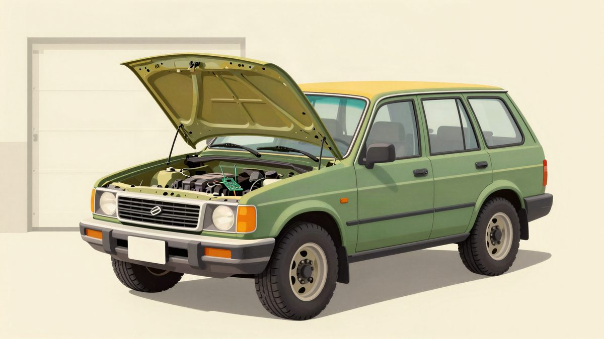

Jeep Cherokee iz 1994. prošao kalifornijski smog test uz Claude Code i Codex, hardver je koštao oko 14 eura

Vlasnik Jeepa Cherokee iz 1994., Muhammad Zulali, kaže da je uz Claude Code i OpenAI Codex riješio problem s emisijom dušikovih oksida, koji servis nije mogao dijagnosticirati. Jeep je nakon toga prošao kalifornijski smog test, a hardver je koštao oko 14 eura. Rezultat se temelji na jednom vozilu i nije neovisno potvrđen.
Vlasnik Jeepa Cherokee iz 1994., Muhammad Zulali, kaže da je popravio auto koji servis nije mogao dijagnosticirati, uz pomoć programskih agenata. Jeep je nakon toga prošao kalifornijski test ispušnih plinova (smog test). Hardver je koštao oko 15 dolara (oko 14 eura).
Auto ima 4,0-litreni redni šesterocilindrični motor i godinama nije prolazio test zbog previsokih emisija dušikovih oksida (NOx). Svaki test košta oko 100 dolara. Zulali je prvo zamijenio lambda sondu, no emisije su se nakon toga povećale.
Računalo bez OBD2 sučelja
Servis nije mogao pomoći jer Jeep nema moderno OBD2 sučelje. Standardni dijagnostički uređaji ne mogu komunicirati s računalom motora proizvedenim u prosincu 1993.
Zulali je zato problem prepustio alatu Claude Code tvrtke Anthropic. Claude je prepoznao da računalo koristi Chryslerov stari SCI protokol, kod kojeg su signalne linije obrnute u odnosu na standardni serijski priključak, pa je potreban adapter.
Rješenje je bila razvojna pločica od oko 3 dolara na bread boardu, koja služi kao prevoditelj. Komunikacija radi brzinom od oko 7.800 bauda. Na šesteropolni dijagnostički konektor spajaju se tri žice, a jedan pin je pod naponom od 12 V, pa pogrešan spoj može spaliti pločicu.
Greške i druga polovica posla
Claude je pritom griješio. Utvrdio je da tablica parametara u javnom alatu ChryslerScanner ne vrijedi za ovaj Jeep, a računalo je zapravo smanjivalo dovod goriva umjesto da ga povećava.
Zatim je u posao ušao OpenAI Codex. Prema Zulalijevu opisu, našao je način da preko istih triju žica računalu pošalje mali program i pokrene ga izravno. Prva verzija programa obrisana je za nekoliko sekundi, pa je Codex kod prebacio u EEPROM, memoriju koja zadržava podatke i bez napajanja.
Zulali kaže da je Claude odradio većinu dijagnostike, a Codex rad s memorijom, dok je on sam spajao žice i vozio. Projekt je trajao otprilike tjedan dana.
Ograničenja
Zulali priznaje da nije profesionalni automehaničar i da neke njegove procjene mogu biti pogrešne. Rezultat se temelji na jednom vozilu i nije neovisno potvrđen.
Izvor: MyDrivers (快科技)